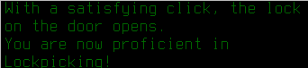

With lockpicks in hand, Erik drives out to the wind turbines to pick their locks and survey the area.
It takes him nearly the whole day to pick one of the locks, stopping to eat cake and drink water for lunch.
 Finally! He picks the lock, and at the same time gains proficiency in picking locks, which will make the other wind turbines much faster.
After climbing to the top, he gains a wide view of the surrounding area.
Before heading to the next wind turbine, Erik decides to complete the mission given by Smokes the refugee center merchant and clear out their back bay.
Sure enough, he pulls back a locker, opens the solid door, and a flood of zombies comes stumbling at him with outstretched arms. Erik pulls back and lets the strong guards with sturdy stone spears take care of them.
The battle was bloody, but only zombies died. Erik collected his reward from Smokes: a bunch of refugee center money known as "merch" by the Free Merchants faction who ran the center.
He also received a new mission: to find and eliminate a gang of bandits preying on Free Merchants caravans. This would be extremely dangerous, if these bandits had guns.
Before that, Erik picked his way into two more wind turbines and found even more of the map.
There was a big mansion to the north of the last turbine, so Erik and Alejandro went to investigate.
While Alejandro guarded the pickup, Erik lit some fires and taunted zombies into the flames, stabbing at them with his combat knife. He didn't make it far into the mansion, but there was still some good loot.

Two hiking backpacks, some of the best packs ever sold. Erik quickly made these his and Alejandro's standard kit pack.
He converted his old rucksack into another standard kit for the next member of his team, whenever he found them.
Back at base, Erik decided he needed a fence for his cows. He had Alejandro chop down trees and cut them into planks, while he went on the hunt for nails.
Erik burned down a moonshine still through the night, and tool the nails out of the dust and rubble left afterward. He needed lots of nails for this fence.
By the end of the next day, Erik and Alejandro had built a fence for their four cows!

Erik's next move was to raid some libraries, to get enough books to craft advanced items and build better cars. The problem was combat in a city: Erik didn't want to resort to melee combat for fear of injury, and guns were too loud. However, a suppressed .22 caliber rifle was as quiet as footsteps, and powerful enough to take down even tough zombies. Erik grabbed a pocket full of ammunition and his suppressed Marlin 39A and went off library raiding.
The first library, down to the southwest of his base, yielded some useful books, though it was severely torn up. His silenced .22 rifle tore through zombies without them even noticing him.

The second library, up in the huge city, proved to be just as easy a raid, though it too had been vandalized and many of the books rendered unreadable.
Erik brought the books back to base with a good feeling in his heart. They would be very useful in the future.

He also retrieved another freezer and a refrigerator from a bunker he and Alejandro had raided on the way. He didn't turn the freezer on yet, but the fridge would be very useful for storing cow milk for him and Alejandro to drink for the calories.

During his exploration, Erik had noticed a small military outpost. It didn't look too occupied, and would have valuable ammunition, so he and Alejandro went on a raid.
They shot down a cloud of huge ovipositing wasps, then broke into the outpost with little resistance. One C-4 explosion later, and they carted home more than 2000 rounds of 5.56 NATO ammunition.
With this arsenal, Erik and Alejandro were ready to begin focusing on further goals: electric hybrid cars, automated laser turrets, and raiding top-secret science laboratories.